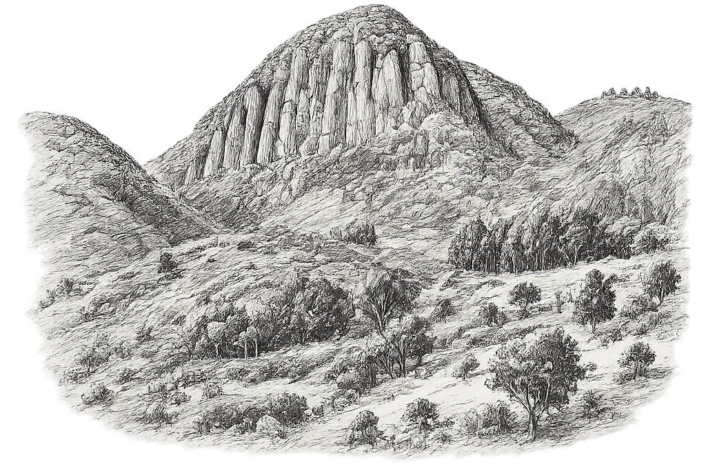

Tenjo · Cundinamarca · Colombia
Del micelio a la mesa.
Hongos para cocinar con criterio. Conocer la seta. Imaginar el plato.
Explorar las setas01 · El proyecto

Desde Tenjo
Cundinamarca
02 · La seta

Shiitake
Lentinula edodes
03 · El plato

Arepa con shiitake
Ilustración culinaria